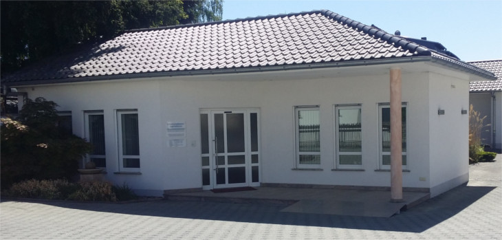

Herzlich willkommen in unserer Praxis für Allgemeinmedizin!

Grundlage unseres Praxiskonzeptes ist die evidenzbasierte medizinische Versorgung nach den Leitlinien der Deutschen Gesellschaft für Allgemeinmedizin (DEGAM)
Wir bieten eine breites, allgemeinmedizinisches Untersuchungs- und Behandlungspektrum an.
Insbesondere die Versorgung akuter Notfälle, die Betreuung von Patienten mit chronischen Krankheiten, die Versorgung älterer Patienten (Geriatrische Versorgung) sowie die psychosomatische Grundversorgung.
Dazu gehört auch der einfache grippale Infekt oder die Versorgung von kleineren Verletzungen. Auch die Betreuung nach Operationen oder Krankenhausaufenthalten übernehmen wir.
Wir nehmen uns Zeit für die Patienten und wollen, dass der Patient mit uns informierte Entscheidungen trifft. Die Aufklärung über die Erkrankung und die Einordnung von Fremdbefunden anderer Fachrichtungen werden in einem ausführlichen Gespräch erörtert, damit jeder Patient seine Erkrankung begreifen und selbstbestimmt mitentscheiden kann.
Wir werden eng mit niedergelassenen Fachärzten und Krankenhäusern in der Umgebung zusammenarbeiten und können so in Notfällen schnell helfen.